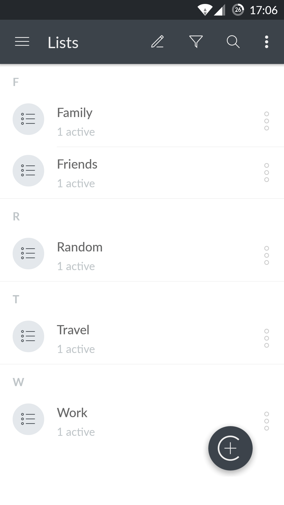
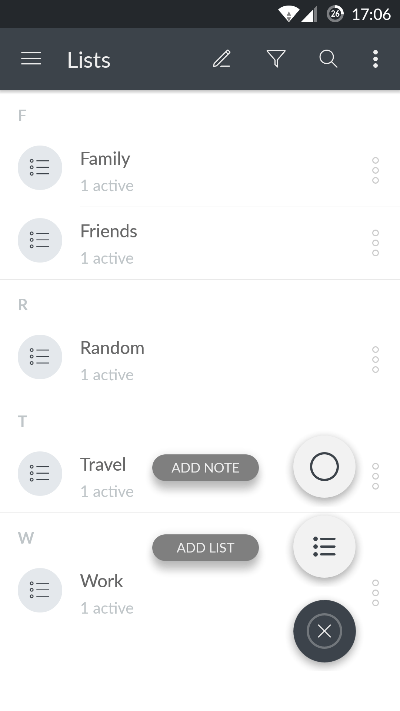
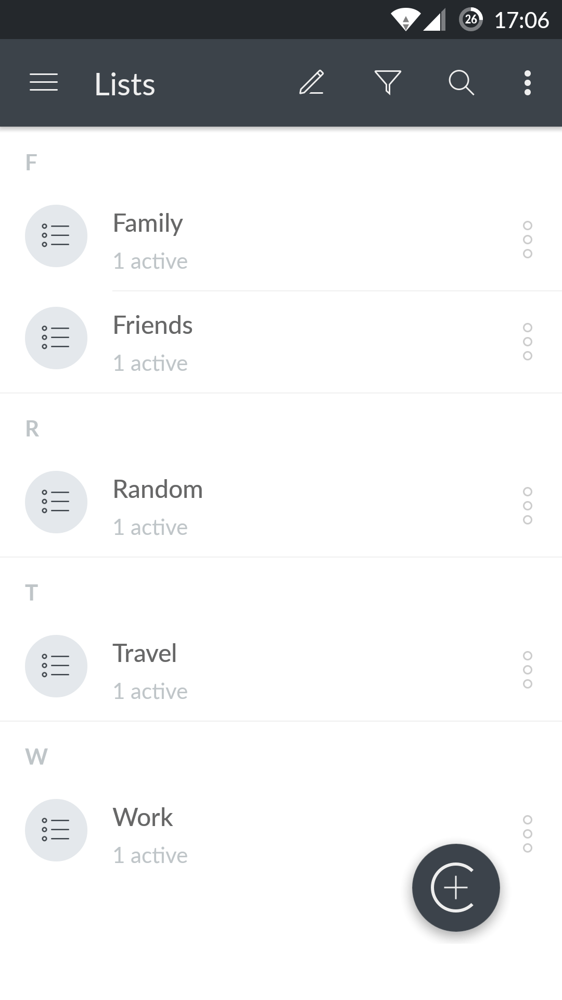
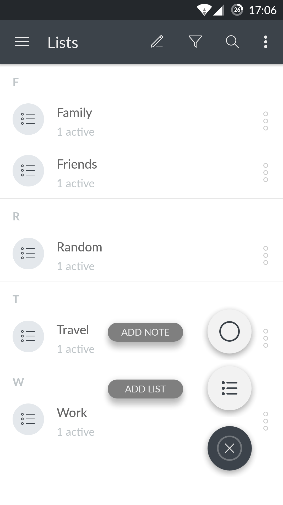

Start experience, c'est quoi ?
La start experience (ou user onboarding) est le processus suivi par un utilisateur lorsqu’il lance une application web ou mobile pour la première fois. Elle joue un rôle déterminant dans l’approche qu’aura l’utilisateur par la suite : une start experience mal conçue peut le frustrer et l’amener à désinstaller l’appli.
La catastrophe
Centrallo est une appli de prise de notes. Dans son cas, la start experience n’est vraiment pas au point et ne donne pas du tout envie d’aller plus loin que les premiers écrans.
Ce qui ressemble à des boutons sont en fait de simples icônes totalement inutiles. Quitte à remplir du vide, le logo de l’appli aurait sans doute été plus utile.
L’inscription est obligatoire dès le premier écran. On n’a pas pu avoir un seul aperçu de l’appli qu’il faut s’engager, non merci.
On se demande ce que font les icônes de réseaux sociaux. Partage ? Connexion ? Simple déco comme les icônes du haut ? On ne le sait qu’en appuyant dessus : connexion, mais dans ce cas elles sont trop discrètes.
Simple et efficace, le formulaire en lui-même fonctionne plutôt bien.
En revanche le champ promo code semble inutile et laisse présager des fonctions payantes dans l’appli.
Maintenant qu’on est inscrit, on nous tease les fonctionnalités de l’appli. C’est pas avant qu’il faut le faire normalement ?
Le bouton start ne ressort pas assez et pourrait être pris pour une bannière pub.
On se sent un peu perdu une fois devant l’interface principale. On retrouve les listes mais pas de notes, même dans le menu. Pourquoi afficher des exemples de liste mais pas de notes ?
 



Même si le logo contient un "+" on ne devine pas qu’il s’agit du bouton d’ajout ! Mais on trouve enfin le moyen de créer une note.
Littéralement rien à signaler. Aucun élément n’est particulièrement mal conçu ni mis en évidence. On aurait quand même apprécié une petite explication de l'interface.
On a enfin atteint la fin du processus. A ce stade, on n'a plus qu'une envie : désinstaller l'application pour la remplacer par une autre bien mieux.
La nouvelle version
Comme rien n'est à garder de la start experience initiale, on reprend tout à zéro. L'objectif principal : faire en sorte que l'utilisateur ne désinstalle pas l'appli, du moins pas tout de suite.
On oublie l'inscription dès l'ouverture. Ici on met en avant le point fort de l'appli et on offre un choix à l'utilisateur : commencer ou se connecter.
L'option connexion est présente pour permettre à un utilisateur qui aurait déjà un compte d'éviter le tutoriel et de récupérer ses notes synchronisées.
Un rapide tutoriel qui permet à l'utilisateur de découvrir l'interface de prise de notes en pratiquant.

On permet également de passer le tutoriel, soit si on s'est trompé à l'écran précédent, soit si on n'a simplement pas envie de le suivre
Le tutoriel est terminé et l'utilisateur sait comment noter ce qu'il veut. Maintenant qu'il a vu ce qu'était l'application on peut lui demander de s'engager un peu plus.
L'inscription est toujours un moment d'hésitation mais l'utilisateur est plus enclin à accepter de donner ses informations si on lui offre un service en retour, mettons-le en avant.
On lui offre évidemment la possibilité de décliner, en lui faisant savoir qu'il peut toujours s'inscrire plus tard s'il le veut.
Nous voici face au dernier écran : le formulaire d'inscription. Il a été clarifié et simplifié : une seule étape est nécessaire, quelle que soit la méthode d'inscription.
On retrouve nos boutons "réseaux sociaux" mais cette fois ils sont clairs et visibles, l'utilisateur sait ce qui va se produire s'il appuie dessus.
Une fois ce nouveau processus achevé, l'utilisateur atteint l'écran où s'affichent toutes ses notes et peut profiter de l'application comme il l'entend.